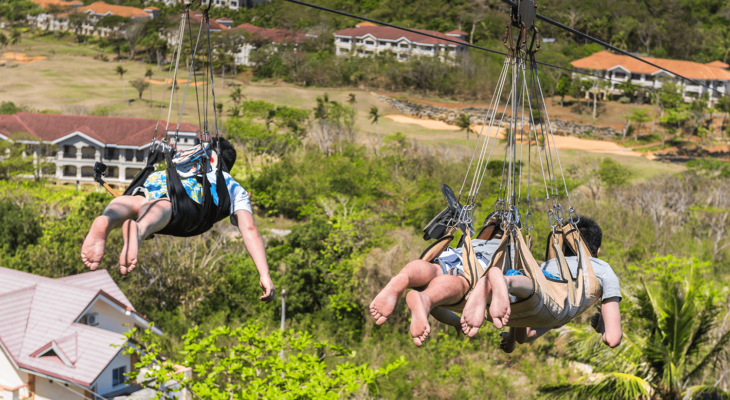

Boracay is a small tropical island located in the Western Visayas region of the Philippines. With its stunning white sandy beaches, crystal-clear waters, and vibrant nightlife, Boracay has become one of the most popular tourist destinations in Southeast Asia.
The island is approximately 7 kilometers long and 1 kilometer wide, making it easy to explore and enjoy all that it has to offer. Boracay is divided into three main stations: Station 1, Station 2, and Station 3, each offering its unique charm and activities.
Beaches
Boracay is renowned for its beautiful beaches, with White Beach being the most famous and iconic. White Beach stretches for approximately 4 kilometers and is divided into three sections, each offering a different atmosphere.
- Station 1: This part of White Beach is known for its luxurious resorts and a more tranquil environment. It's an excellent spot to relax and enjoy the stunning sunsets.
- Station 2: Station 2 is the bustling heart of Boracay, with numerous shops, restaurants, and bars. It's the place to go for shopping and experiencing the island's vibrant nightlife.
- Station 3: The southernmost part of White Beach is Station 3, offering a more laid-back vibe. It's a great area for budget travelers and those seeking a quieter ambiance.
Water Activities

Boracay offers a wide range of water activities to suit every traveler's preferences. From snorkeling and scuba diving to kiteboarding and parasailing, there's something for everyone to enjoy the crystal-clear waters of Boracay.
Island Adventures
Apart from the beaches and water activities, Boracay also offers land-based adventures. Visitors can explore the island on an ATV tour, hike up to Mount Luho for panoramic views, or take a serene island hopping tour to nearby islets.
Delicious Cuisine
Boracay's culinary scene is diverse, with restaurants offering a wide variety of dishes to satisfy any palate. From fresh seafood to international cuisine and traditional Filipino dishes, food enthusiasts will have a delightful experience on the island.
Visit Boracay
Whether you're seeking a relaxing beach vacation or an adventurous getaway, Boracay has it all. With its pristine beaches, exciting water activities, and vibrant atmosphere, it's no wonder that Boracay remains a favorite destination for travelers from around the world.